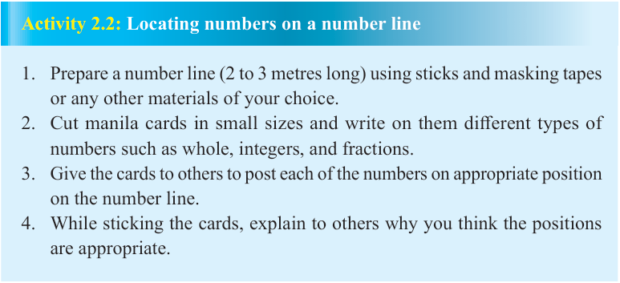

Fractions, integers, whole numbers, terminating and non-terminating decimals form the set of rational numbers. For instance, and are rational numbers.
Representation of rational numbers on a number line
Rational numbers can be represented on a number line. Positive rational numbers are represented on the right of zero (the origin) and the negative rational numbers on the left of the origin. The number line helps us to determine other rational numbers between any two rational numbers by increasing the number of divisions. Activity 2.2 enables you to locate numbers on a number line.

Activity 2.2: Locating numbers on a number line
Prepare a number line (2 to 3 metres long) using sticks and masking tapes or any other materials of your choice.
Cut manila cards in small sizes and write on them different types of numbers such as whole, integers, and fractions.
Give the cards to others to post each of the numbers on appropriate position on the number line.
While sticking the cards, explain to others why you think the positions are appropriate.
The representation of any positive rational number is done by dividing the unit interval into '' equal parts. The '' of these parts are taken along the number line to reach the point corresponding to on the right of zero if the number is positive and to the left of zero if the number is negative.
Example 2.1
Represent on a number line.